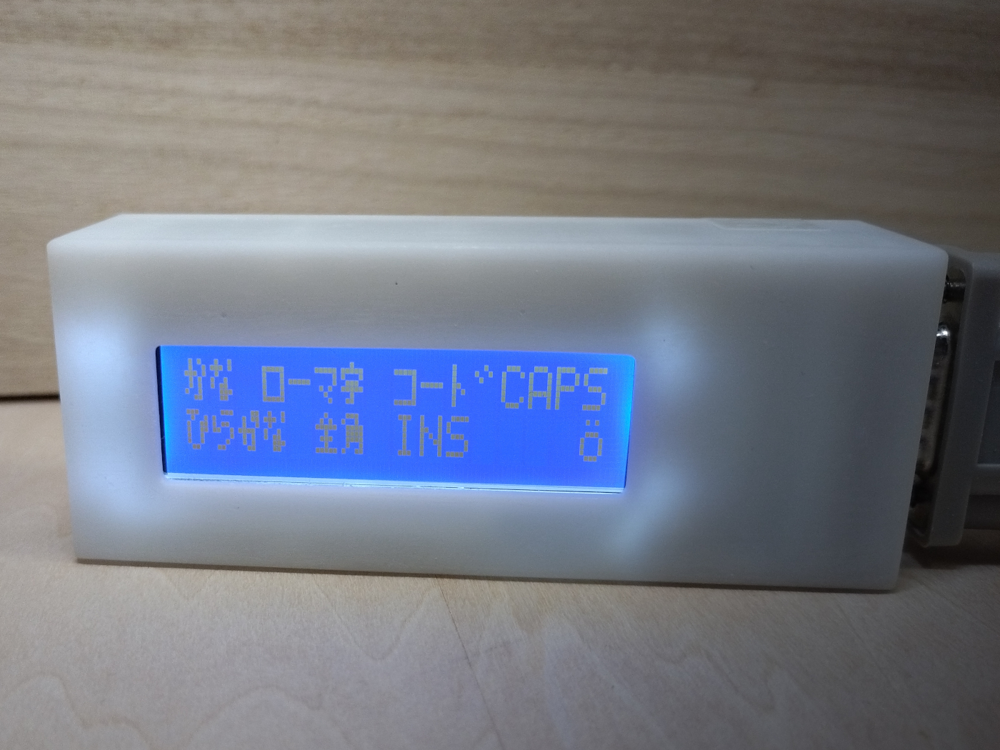
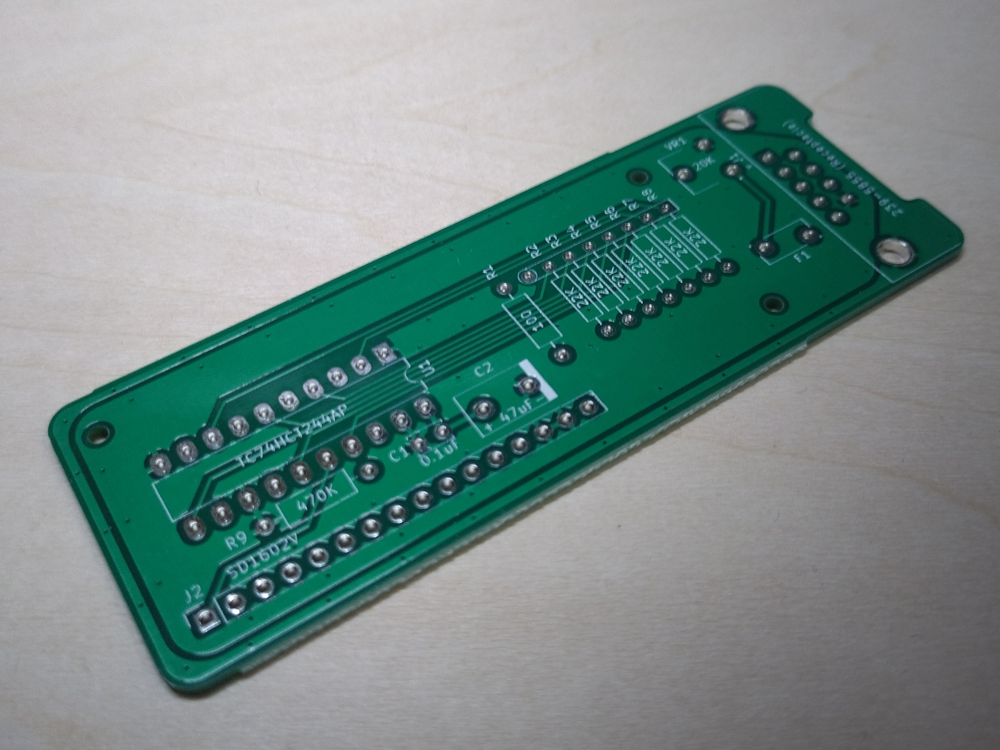

たんぼ氏(@h_koma2)が開発された「白窓君」の私家版クローンに関する情報をまとめています。
USB joypad to X680x0へつないでおくための白窓君を追加購入しようとしたのですが品切れしており、在庫補充を待ちきれずに自分用に製作したものになります。
白窓君の代替として使えることを目指してはいますが、元々が自分専用であるため、万人向けとなるよう考慮されたものではありません。
原作についての情報はTNB製作所のページをご確認ください。
また、TNB製作所's BOOTHにて、たんぼ氏の手による、いわゆる純正品を購入することができます。
| 配置番号 | 部品名または型名や仕様 | 秋月電子の通販コード | 解説 |
|---|---|---|---|
| - | 専用基板 | - | BOOTHにて頒布予定です。  |
| - | M1.7かM1.6のネジやスペーサー類 | - | 専用ケースに組み込む場合、長さ4mmのM1.6タッピングねじが6本必要です。 |
| - | 接続ケーブル | C-00004 | 片側がDE-9レセプタクル、他端がDE-9プラグのストレート結線のケーブルが必要です。 EIA-574(9ピンタイプのRS-232)のストレート延長ケーブルや、メガドライブのパッド用延長ケーブルを利用できます。 |
| - | Sunlike Display Tech.製 SD1602V | P-02985 | ピン配置や形状が紛らわしい物が多いので、指定品以外を使う場合には念入りに確認してください。 例えば SD1602H(P-01675 や P-01797)を接続しても動作はしますが、ネジ穴位置が異なるため、専用ケースには組み込めません。 |
| U1 | 東芝製 TC74HCT244AP | - | |
| C1 | 0.1uFで耐圧16V以上の積層セラミックコンデンサ | P-04064 | |
| C2 | 47uF～100uFで耐圧16V以上の積層セラミックコンデンサまたは電解コンデンサ | P-10270 | |
| F1 | リセッタブルヒューズ MF-R010 | P-12911 | (参考)R2～R9が実装されていない状態での消費電流は16mA程でした。 つまり、MF-R010より定格の小さいリセッタブルヒューズを選択可能です。 |
| J1 | 半田付け式ボードロックを有する、ライトアングル(水平取付)DE-9レセプタクル | - | 【部品の例】 LinkMan 3223DB9RS1S2 や 3223DB9RS1G1E RS-PRO 239-5855 TE 5747844-4 |
| J2 | 分割ピンソケット FHU-1x42SG | C-05779 | 必要なピン数に切って使います。 |
| VR1 | 半固定抵抗 TSR-065-203-R | P-06064 | 20kΩ Bカーブ 液晶画面のコントラスト調整に使います。 |
| 配置番号 | 部品名または型名や仕様 | 秋月電子の通販コード | 解説 |
|---|---|---|---|
| - | 分割ピンヘッダ PH-1x40SG | P-00167 | 上記J2のオス側 |
| R1 | - | LEDバックライトの電流制限抵抗です。 SD1602Vのデータシートを確認して、値を選定してください。 |
| 配置番号 | 部品名または型名や仕様 | 秋月電子の通販コード | 解説 |
|---|---|---|---|
| R2～R9 |
3Dプリンタ出力品ですので、いわゆるガンプラのような精度を有していません。
また、ケースに組み込んだ状態でのコントラスト調整はできないため、
必ずケースに組み込む前に動作確認や調整を済ませる必要があります。
どうしても分解が必要になった場合に備えて、ケース左側面に隙間を用意してあります。
この隙間とDE-9コネクタ上面の段差を利用して開けてください。
SD1602Vをフロントパネルにネジ止めする場合、ネジは少し緩めに止めてください(締まり始める位置から1/8～1/4回転程度戻す感じ)。
J2の取り付け誤差をこの緩みで吸収する意図です。
SD1602Hを組み込むことはできません。
フロントパネルのネジ穴の位置が違うだけでなく、フィルムケーブルを破損する恐れがあるためです。
Vカット線以外の基板外形線は全て0.5mmグリッド上に乗るように設計してあります。
以下、明示しない限り、
{kind=link}